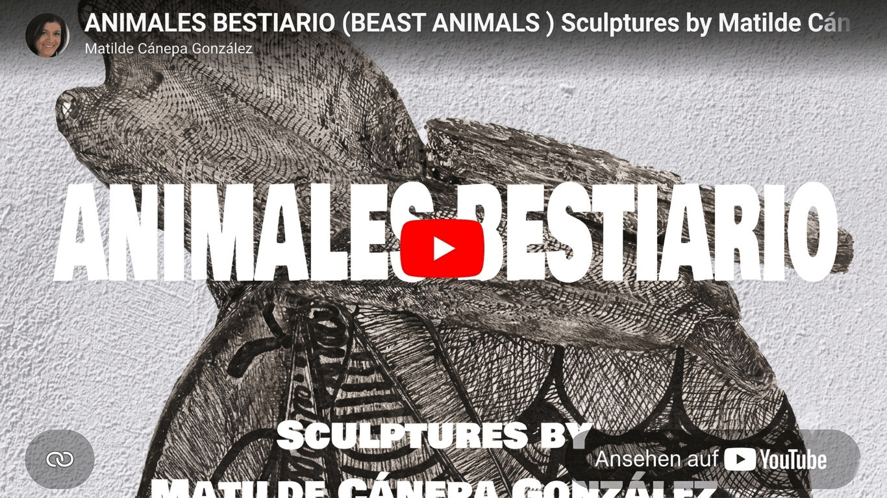
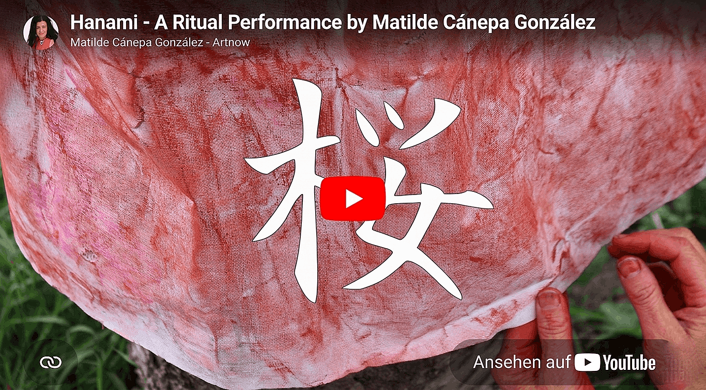
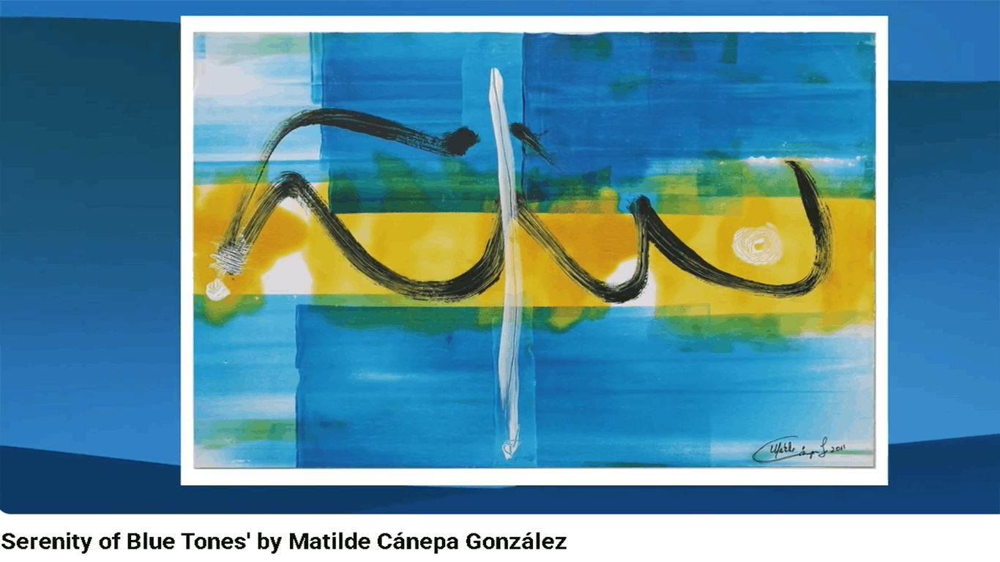
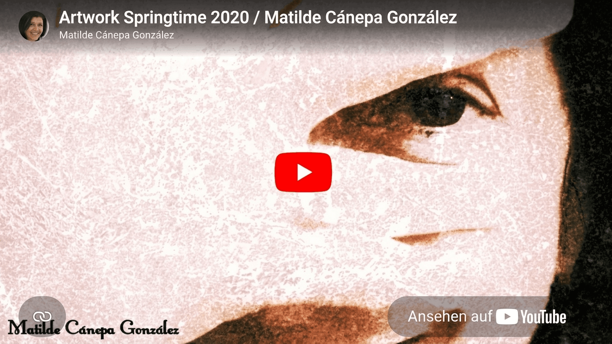
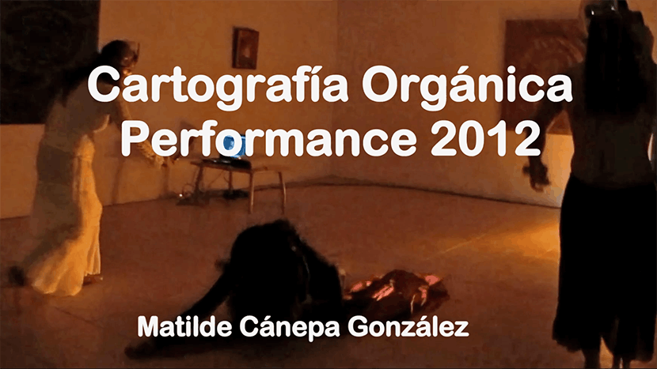
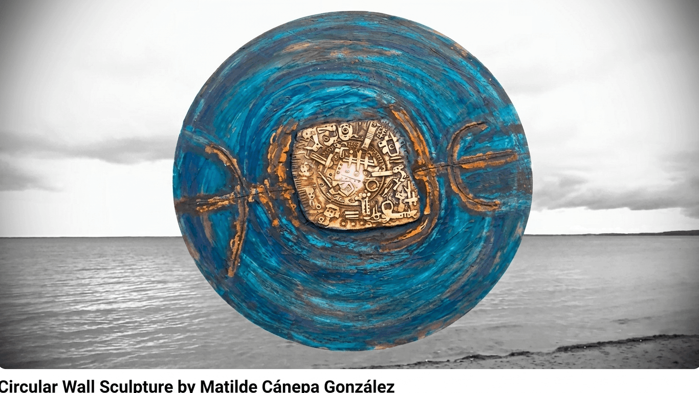

Videos –
When Images Begin to Move
These short films transform artworks, photographs, and performances
into moving visual narratives. Accompanied by music, they continue
the journey beyond the still image — click any image to watch on
YouTube.

Bestiary — Five Sculptures
It began as an intuitive movement, shapes arising like a calling.
This bestiary represents a journey toward the roots I left behind —
because sometimes we must grow far from home. It is an image for
crossing from the physical world into the inner one.
Searching for my animal soul, three of these sculptures took shape
in Caracas. Later, in Tenerife, a slower time let the rest settle.
They are hybrid, quiet companions, lingering in silence — not
monsters, but guides between day and night.

My Hanami — Ritual Performance, Berlin 2022
We reach the path of cherry trees, leaving behind what remains of
the wall that once divided Germany. That time is gone. Under the pink
blossoms, I listen to the birds and let the tensions of the present
fall away.
What was once a wall of violence is now planted with sakura — a gift
from Japan, offered in the language of flowers. Lying beneath the
trees, watching the blue sky through pink branches, opens the heart.
In that moment, my intention was born: to make art as a symbolic
celebration.

Serenity of Blue Tones
Blue unfolds here like a quiet breath across water and sky. I begin
with monotype prints and let them transform through layers of
acrylic, moving between chance and intention, between stillness and
gesture. The cool shades open spaces for contemplation, while subtle
warm tones surface like distant memories, bringing balance and
light.
In the textures, traces, and transparent layers, a landscape
appears that is felt rather than seen. I invite you to pause here, to
enter a moment of calm and drift through the silent poetry of
color.

Spring 2020 — Drawings from the Lockdown
During the quiet months of lockdown, drawing became a daily ritual
for me. From my studio window, I watched spring unfold slowly in the
garden, blossom by blossom, while sketching the changing light and
rhythms of nature.
These drawings are traces of a time marked by stillness, reflection,
and attentive observation. They capture the dialogue between my inner
world and the awakening season outside. This video presents details
from my painting Spring 2020, a work born from those days of silence
and renewal.

Cartografía Orgánica — Performance
In Cartografía Orgánica, my visual world meets the music Travesía
por la paz by Damelis Castillo, and together we move through inner
landscapes. Organic forms emerge like traces of memory, nature, and
transformation.
The performance grows out of a ritual cleansing. Fire becomes a sign
of transformation and renewal, and at its center I kindle a
spiral-shaped form — a symbol of the inward journey and the
continuous movement of life. Within the flames, letting go and new
beginnings become one. Image, movement, and music merge into a quiet
meditation on transformation, memory, and inner peace.

Circular Wall Sculpture — Silences that Survive
Some silences do not disappear. They remain, settling into the wood,
clay, and copper I work with, like memories that refuse to leave.
Within these circles I gather fragments around a hidden center —
traces of stories untold, signs half remembered, meanings held in
quiet suspension.
With Silences that Survive I speak of what endures beyond words: the
invisible layers of experience, time, and presence that keep
resonating long after the voice has fallen silent.